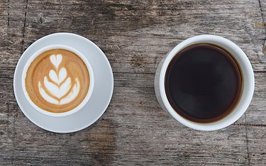

This page provides information about various things.
Section Tag
From Wikipedia, the free encyclopedia
This article is about the beverage. For other uses, see Coffee (disambiguation).
Coffee
Espresso latte and black filtered coffee
Type Usually hot, can be iced
Country of origin Yemen[1]
Introduced 15th century
Color Black, dark brown, light brown, beige
Flavor Distinctive, somewhat bitter
Ingredients Roasted coffee beans
Coffee is a beverage brewed from roasted coffee beans. Darkly colored, bitter, and slightly acidic, coffee has a stimulating effect on humans, primarily due to its caffeine content. It has the highest sales in the world market for hot drinks.[2]
The seeds of the Coffea plant's fruits are separated to produce unroasted green coffee beans. The beans are roasted and then ground into fine particles typically steeped in hot water before being filtered out, producing a cup of coffee. It is usually served hot, although chilled or iced coffee is common. Coffee can be prepared and presented in a variety of ways (e.g., espresso, French press, caffè latte, or already-brewed canned coffee). Sugar, sugar substitutes, milk, and cream are often added to mask the bitter taste or enhance the flavor.
Main Tag
Though coffee is now a global commodity, it has a long history tied closely to food traditions around the Red Sea. The earliest credible evidence of coffee drinking as the modern beverage appears in modern-day Yemen in southern Arabia in the middle of the 15th century in Sufi shrines, where coffee seeds were first roasted and brewed in a manner similar to how it is now prepared for drinking.[3] The coffee beans were procured by the Yemenis from the Ethiopian Highlands via coastal Somali intermediaries, and cultivated in Yemen. By the 16th century, the drink had reached the rest of the Middle East and North Africa, later spreading to Europe.
The two most commonly grown coffee bean types are C. arabica and C. robusta.[4] Coffee plants are cultivated in over 70 countries, primarily in the equatorial regions of the Americas, Southeast Asia, the Indian subcontinent, and Africa. As of 2023, Brazil was the leading grower of coffee beans, producing 35% of the world's total. Green, unroasted coffee is traded as an agricultural commodity. Despite coffee sales reaching billions of dollars worldwide, farmers producing coffee beans disproportionately live in poverty. Critics of the coffee industry have also pointed to its negative impact on the environment and the clearing of land for coffee-growing and water use. The global coffee industry is massive and worth $495.50 billion as of 2023.[5] Brazil, Vietnam, and Colombia are the top exporters of coffee beans as of 2023.
Article Tag
Roasting
Main article: Coffee roasting
Roasted coffee beans
The next step in the process is the roasting of green coffee. Coffee is usually sold in a roasted state, and with rare exceptions, such as infusions from green coffee beans,[97] coffee is roasted before it is consumed. It can be sold roasted by the supplier, or it can be home roasted.[98] The roasting process influences the taste of the beverage by changing the coffee bean both physically and chemically. The bean decreases in weight as moisture is lost and increases in volume, causing it to become less dense. The density of the bean also influences the strength of the coffee and the requirements for packaging.
The actual roasting begins when the temperature inside the bean reaches approximately 200 °C (392 °F), though different varieties of seeds differ in moisture and density and therefore roast at different rates.[99] During roasting, caramelization occurs as intense heat breaks down starches, changing them to simple sugars that begin to brown, which darkens the color of the bean.[100]
Sucrose is rapidly lost during the roasting process, and may disappear entirely in darker roasts. During roasting, aromatic oils and acids weaken, changing the flavor; at 205 °C (401 °F), other oils start to develop.[99] One of these oils, caffeol, is created at about 200 °C (392 °F), and is largely responsible for coffee's aroma and flavor.[22] The difference of caffeine content between a light roast and a dark roast is only about 0.1%.[101]

Coffee
Summary Tag
Folklore and culture
There are many stories about coffee and its impact on people and society. The Oromo people would customarily plant a coffee tree on the graves of powerful sorcerers. They believed that the first coffee bush sprang up from the tears that the god of heaven shed over the corpse of a dead sorcerer.[204] Johann Sebastian Bach was inspired to compose the humorous Coffee Cantata, about dependence on the beverage, which was controversial in the early 18th century.[205]
In the United States, coffee is sometimes called a "cup of Joe". The origins of this phrase is in dispute; a common story is that in World War I the US Secretary of the Navy Josephus "Joe" Daniels banned alcohol on navy ships which meant that the strongest drink available aboard the ship was black coffee. Sailors began referring to coffee as a "cup of Joe" in reference to Daniels. However, this story may be apocryphal since the first written account of it was in 1930, some 15 years later. Another explanation is that a formerly popular nickname for coffee, "jamoke" from mocha java, was shortened to "Joe". A third origin story is that since coffee is such a commonly consumed beverage, it's the drink of the average Joe.[206][207][208]